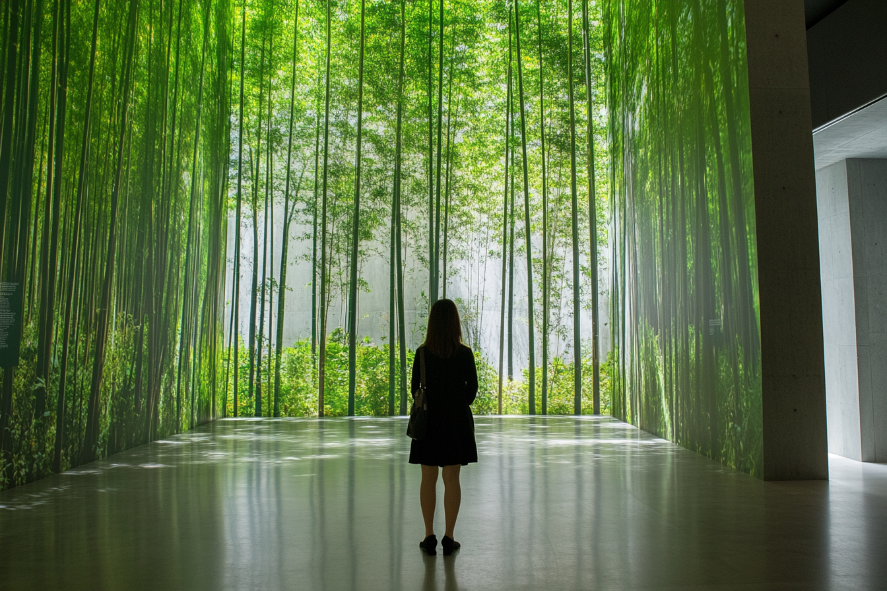

Behind the Lens: The Making of Polaroids from Tomorrow
Step into the creative process of the "Polaroids from Tomorrow" photo series. This specialized tour delves into the artistic inspiration, storytelling techniques, and production challenges behind the provocative images. Ideal for art enthusiasts and those curious about speculative storytelling.
Learn moreNature Reimagined: A Digital Future
How much space does nature occupy in our increasingly digital lives? This exhibition explores the intersection of nature and technology, inviting visitors to reflect on how natural landscapes are represented, preserved, or transformed in a digital era. Through immersive installations, it envisions a future where nature and innovation coexist in unexpected ways.
Learn more
